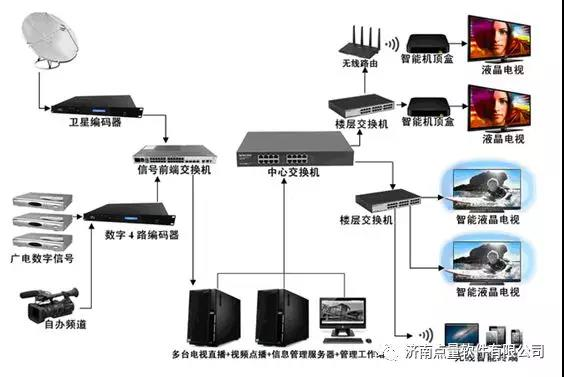
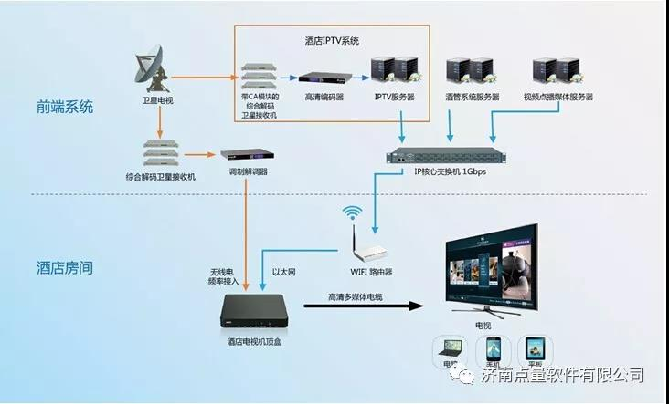

信息技术的发展给各行各业都带来了极大的便利，也让人们从原有的局限中解放出来，高铁飞机等交通工具的发展，让人们跨越了地域的限制;而携程飞猪等工具让人们可以说走就走;娱乐业的发展让人们在娱乐方式的选择上更加多样化。
比如以前我们只能观看电视台播出的节目，现在却可以自由选择自己喜欢的节目，让电视变成“我的电视”而不在是“看电视”，这一切的发展都离不开IPTV系统的发展和完善。
现在的IPTV系统解决方案根据运用行业的不同，在基本功能的基础上会有很多其他个性化的定制部分。今天就和大家说说IPTV系统解决方案之酒店行业。

1
首先来说明下什么是IPTV系统，然后在来介绍酒店IPTV系统解决方案，以及在酒店行业里的一些定制化内容。
IPTV系统功能：
一个是电视直播节目，一个是视频点播。其中点播又可以按照不同的类别进行分类，比如电视剧、综艺、生活、少儿、教育、漫画等等。
电视直播可以包括国内的央视和主流卫视，也有很多是有一些港澳台或者其他国家的电视节目，具体要看情况。
国内的IPTV系统也就是我们家里常用的联通或者电信电视盒，优势就是因为是专网在电视节目这块具有更好的清晰度，而且也可以回看(看几天前的节目)、时移(也就是快进、暂停等)、点播(不过因为是专网，点播资源更新不如OTT及时)。
以上这些都是常用的家庭型IPTV系统或者OTT系统软件功能，而酒店IPTV系统是在此基础上，结合酒店行业的特点做了扩展。不同大小的酒店行业需要做的扩展也是不同的。

2
酒店IPTV系统解决方案
比如一些小型酒店可能只需要扩展一些酒店欢迎画面，即在打开酒店内电视的时候会出现：XX酒店欢迎您，有酒店自己的logo，在加上家庭型的常规功能即可。
而对于一些中型酒店，可能在此基础上需要做更加精细化的定制，比如处理logo还有一些专门的栏目，有酒店介绍、酒店内点餐、客房服务等。
更大型的酒店的IPTV系统解决方案复杂度就更高了。除了在开机方面有特殊要求，可能还需要专门的界面实现对于房间里一切工具的控制，比如室内温度、灯光明暗、酒店介绍和其他城市预定，酒店内各种设施使用的预定：比如健身设施、会议室预定、洗衣服务客房服务种类就更多了。
除了内部的功能更丰富，还有外部的联系可能更多，比如票务系统、叫车服务、城市介绍以、周边热门景点推荐以及其他需要第三方平台对接。当然还可以有购物商城等等。
综合以上来说，针对不同的酒店有不同的IPTV系统解决方案。不过从另一个角度来说，对于大型酒店来说可能这个系统不能简单的称之为IPTV系统，而应该是综合性软件。
随着酒店规模的变化，IPTV在整个系统中所占的比例越来越低，更偏向于定制化，而且还需要硬件的一些支持，并不是仅仅涉及到软件方面。也正如此，面对不同的酒店，没有标准的IPTV系统解决方案，任何方案都必须是根据具体情况作出的。